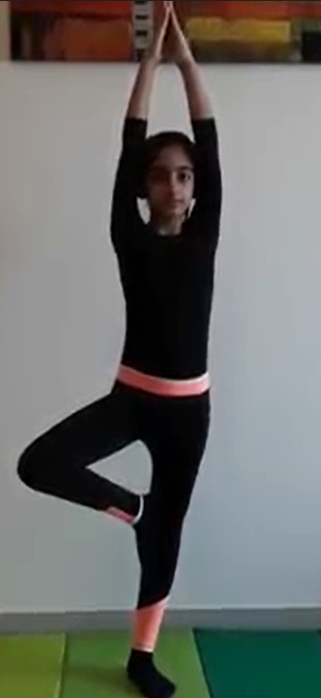

TREE POSE

Steps to perform Tree Pose
- Start by standing straight with a long, tall back and your feet aligned and touching. Your arms should be straight along either side of your body.
- Take a few breaths and find a place or object in the room to focus your attention. Slowly shift your weight to your left leg and begin to raise your right foot off the floor.
- Align the sole of your right foot with the inside of your left thigh. The toes should be pointing down and your pelvis should be completely straight.
- Stretch your arms straight up toward the ceiling with palms pressed together forming an inverted V.